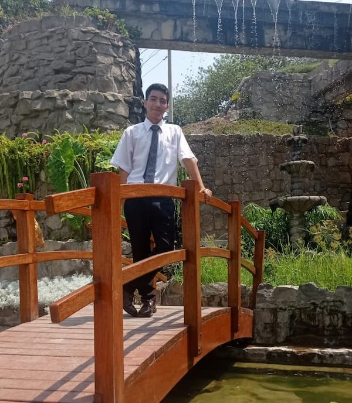

Aron Valderrama
About Me
My name is Aron Valderrama. I am a student at BYU-Idaho studying Web Development. I am currently working on my degree in Web Development and I am excited to learn more about the field. I have a passion for technology and I am always looking for new ways to improve my skills. In my free time, I enjoy playing video games, reading, and spending time with my family.

Lima, Perú
Lima is the capital and largest city of Peru. It is located in the central coastal part of the country, overlooking the Pacific Ocean. Lima is known for its rich history, colonial architecture, and vibrant culture. The city is home to many museums, art galleries, and historic sites, including the Plaza Mayor, the Cathedral of Lima, and the Monastery of San Francisco. Lima is also famous for its culinary scene, with a wide variety of traditional Peruvian dishes and international cuisine.